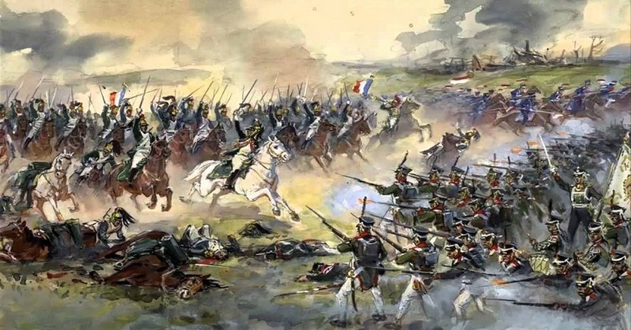
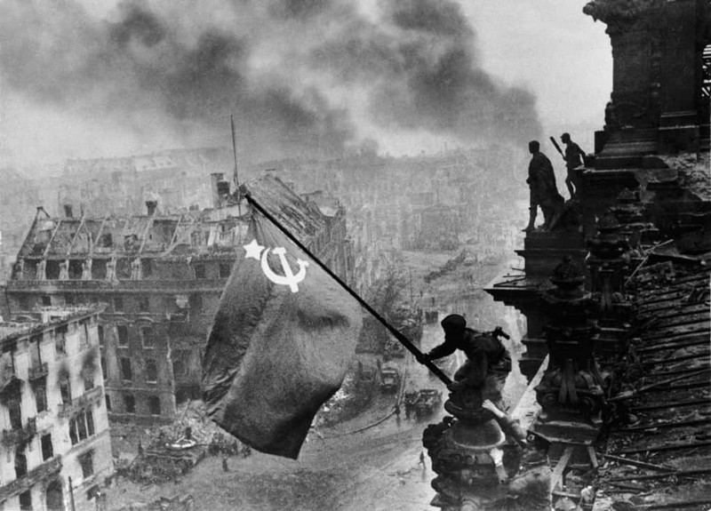

1380 год. Куликовская битва

Эта битва произошла между войском Дмитрия Донского и армией Мамая. Куликовское сражение является ключевым событием, оказавшим огромное влияние на разгром татаро-монгольского ига.
Победа Дмитрия Донского нанесла огромный удар по Золотой Орде, которая к тому времени держала в страхе и подчинении почти пол мира.
Известная былина гласит, что непосредственно перед Куликовским сражением, произошел поединок русского богатыря Пересвета и печенегом Челубеем, чего требовали традиции той эпохи.1812–1813 год. Отечественная война
Начальный этап войны с Наполеоном ознаменовался отступлением русских войск от западных границ Российской Империи.
Второй этап противостояния — это провал французской армии и ее полная капитуляция перед героизмом и самоотверженностью русского солдата. Именно тогда в нашей стране появилось понятие «партизанское движение».
Завершилась война практически абсолютным уничтожением армии Наполеона и отступлением французских войск с российских земель.1941–1945 год. Великая отечественная война
В войне против СССР германским правительством преследовалась цель уничтожить государство противника, завладеть его территорией, подвергнуть физическому истреблению большую часть населения, а тех, кто останется в живых планировалось использовать в качестве бесплатной рабочей силы.
В итоге СССР нанёс самый большой вклад в победу над фашистской Германией, в сравнении со всеми остальными странами-членами антигитлеровской коалиции.
Советский Союз вытеснил агрессора со своей территории и освободил от оккупации страны Центральной и Восточной Европы.